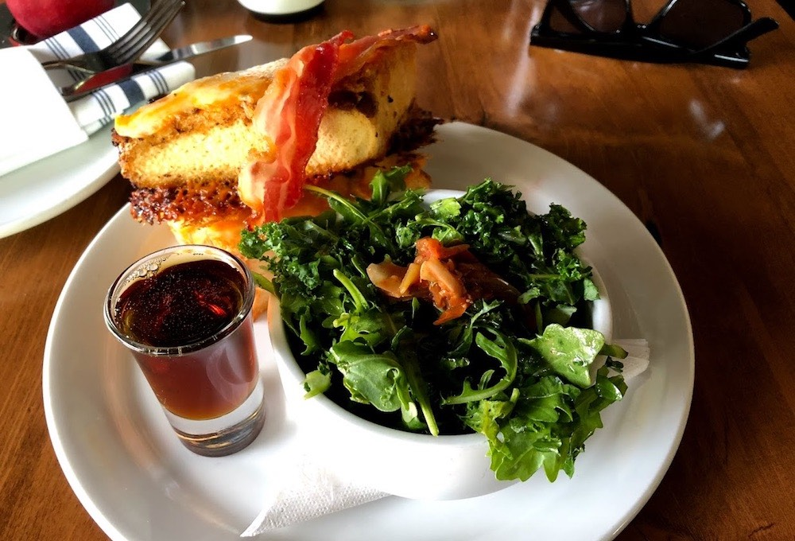

PORTAL
CANADA
Home
História
Culinária
Turismo
Curiosidades
Fale-conosco
Culinária
Culinária do Canadá

Comidas típicas do Canadá populares no café da manhã
Comidas típicas do Canadá populares no almoço e no jantar
Sobremesas canadenses populares